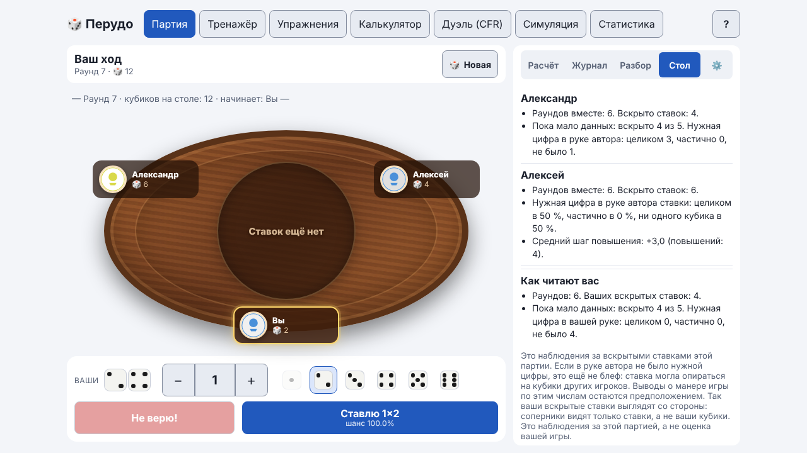
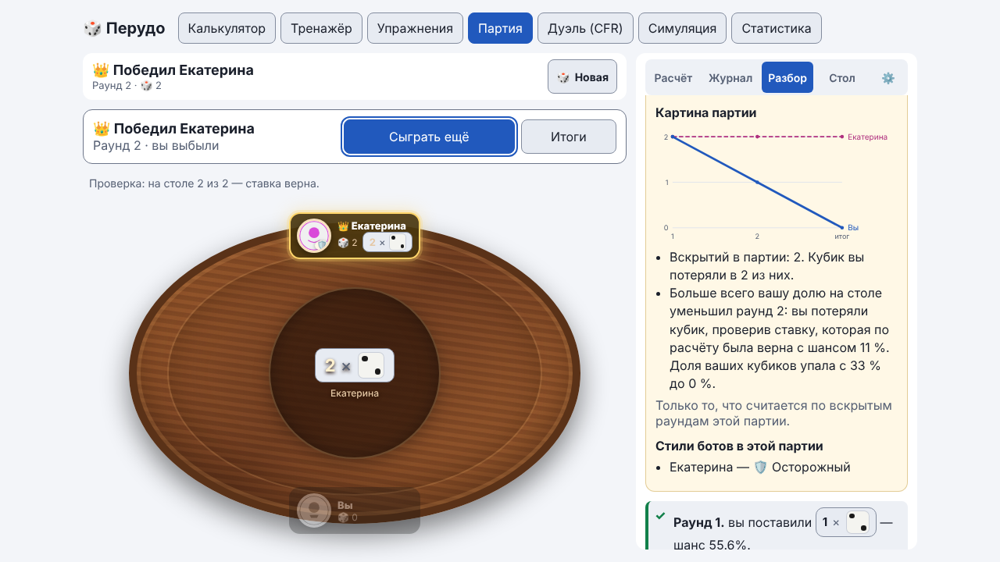

Руководство / Объяснения и чтение стола
Объяснения и чтение стола
Приложение не только оценивает ходы, но и помогает понять, что происходит за столом: объясняет шансы, показывает наблюдения за соперниками и учит читать вскрытие.
Объяснения в партии
В настройках партии есть список «Объяснения». Он решает, когда приложение пишет, почему ставка хороша или слаба.
| Значение | Что показывается |
|---|---|
| Как у режима помощи | «Новичок» — до и после хода, «Тренировка» — после хода, «Игра» — без объяснений |
| Выключены | Никаких пояснений, вкладка «Стол» и «Картина партии» спрятаны |
| После хода | Комментарий к вашему ходу |
| До и после хода | Подсказка перед ходом и комментарий после |
Список «Подробность» выбирает между «Коротко» и «Подробно». В режиме «Игра» объяснений нет, как за настоящим столом.
В пояснениях нет слов «блефует» или «обманывает». Если в руке соперника не было нужной цифры, это ещё не блеф: ставка могла опираться на кубики других игроков.
Догадка перед вскрытием
При объяснениях «До и после хода» (в режиме «Новичок» по умолчанию) на вашем ходу, когда на столе стоит чужая ставка, под карточкой «Картина стола» появляется необязательный вопрос: была ли у автора ставки нужная цифра в руке. Ответьте «Цифра в руке есть» или «Цифры в руке нет»; до хода ответ можно сменить. На телефоне карточка лежит в шторке «Расчёт».
После вскрытия в окне, в блоке «Решение и результат», видно, верной ли была догадка, и счёт за партию: «Догадок в этой партии: 2 из 3». Каждая догадка записывается в ту же тему «чтение ставок по вскрытию», что и упражнение «Читай вскрытие». Догадка не влияет на оценку вашего хода. Если вы не ответили, ничего не записывается. В «Тренировке» (объяснения после хода) и в «Игре» вопроса нет.
Вкладка «Стол»
В партии рядом с «Расчётом», «Журналом» и «Разбором» есть вкладка «Стол». Для каждого соперника она показывает наблюдения только по вскрытым ставкам этой партии:
- сколько раундов вы сыграли вместе и сколько ставок вскрыто;
- как часто нужная цифра была в руке автора ставки целиком, частично или совсем отсутствовала;
- средний шаг повышения и сколько раз соперник проверял ставки.
Доли показываются, когда вскрыто хотя бы 5 ставок. До этого видны только счётчики и пометка «Пока мало данных». Это наблюдения, а не приговор манере игры: выводы из них остаются вашим предположением. Вкладка скрыта в режиме «Игра» и при выключенных объяснениях.
Внизу вкладки стоит блок «Как читают вас»: те же наблюдения о ваших собственных вскрытых ставках (как часто нужная цифра была у вас в руке, ваш средний шаг повышения, сколько раз проверяли вашу ставку). Это то, как ваши ставки выглядят со стороны, без оценки вашей игры.

Картина партии
После партии в карточке итога появляется свёрнутый блок «Картина партии». В нём:
- график числа кубиков у каждого игрока по раундам (ваша линия выделена цветом, остальные различаются ещё и штрихом);
- до трёх фактов по вскрытым раундам: в скольких вскрытиях вы потеряли кубик, какой раунд сильнее всего уменьшил вашу долю, у кого чаще всего было больше всех кубиков.
- «Как вы отвечали разным стилям»: для каждого стиля бота видно, сколько раз вы отвечали на его ставку повышением, проверкой или Calza, какой был средний шаг повышения и сколько ваших проверок оказались верными. Сравнение стилей показывается, когда ответов не меньше пяти. Это наблюдения за одной партией, а не оценка вашей игры.
Если в настройках стили ботов были скрыты, после партии блок называется «Стили ботов в этой партии» и раскрывает, кто каким был. Это работает даже при выключенных объяснениях и в режиме «Игра»; графика в них нет.

Упражнение «Читай стол»
Пятая вкладка раздела «Упражнения» — викторина. Вам показывают ваши кубики, число кубиков у соперников и ход ставок, а затем задают четыре вопроса: верна ли последняя ставка, у кого из авторов трёх ставок меньше всего нужных кубиков, у кого больше кубиков своей цифры, сколько всего кубиков цифры на столе. После четвёртого вопроса открываются руки. Серия из пяти столов заканчивается итогом: сколько ответов верно и насколько вы лучше постоянной догадки, которая ставок не читает.
Упражнение «Читай вскрытие»
В разделе «Упражнения» есть третья вкладка «Читай вскрытие». Вам показывают ваши кубики и ставки раунда по порядку, а затем до трёх вопросов: была ли у автора ставки нужная цифра в руке. Ответ — «Да» или «Нет», единицы-джокеры учитываются. После проверки видны руки при вскрытии и разбор каждого ответа.
Раунды берутся из ваших сыгранных партий. Пока сохранено меньше пяти раундов, часть заданий строится из учебных раундов, которые сыграли боты программы: они помечены «Учебный раунд» и в вашу статистику не попадают. Ошибки в чтении попадают в «слабые темы» на вкладке «Статистика» с пометкой «отв.», а оттуда можно запустить это упражнение.
Лестница ставок в Тренажёре
В Тренажёре есть режим «Лестница ставок (история торгов)»: перед вами три-пять ставок нескольких соперников, а вы решаете, верить последней или нет. Шанс считается с учётом того, что игрок, назвавший цифру, скорее держит её на руках. После ответа показаны шансы и пояснение по каждому шагу. Такие ситуации можно ставить в очередь повторов, как и обычные. Ответы копятся в теме «торги с несколькими соперниками» в блоке «Над чем поработать» на вкладке «Статистика»: если ошибок много, рядом появится кнопка «Тренировать».